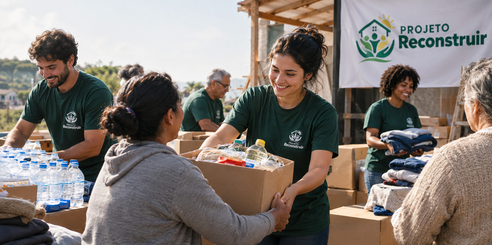

Como Ajudar
Para ajudar o Projeto Reconstruir, preencha o formulário de cadastro com seus dados e escolha se deseja participar como doador ou voluntário.

Para ajudar o Projeto Reconstruir, preencha o formulário de cadastro com seus dados e escolha se deseja participar como doador ou voluntário.